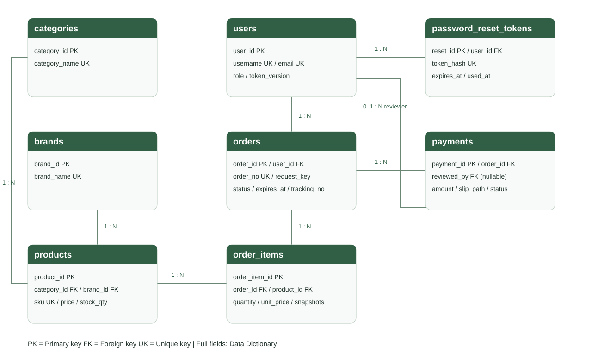

Probiotic Shop — Database Web Application
Vue.js + Node.js + MySQL/MariaDB
จัดทำตามโจทย์ Project ครั้งที่ 1–2
ปรับปรุงหลังตรวจครบ วันที่ 20 ตุลาคม 2569
| ชื่อ | รหัสนักศึกษา |
|---|---|
| กฤตพร ธัญญเจริญ | 1167109060083 |
| ธีทัต แจ่มแจ้ง | 1167109060513 |
| อนันตสิน เสาร์แก้ว | 1167109060547 |
สร้างร้านค้าสาธิตเพื่อจัดการข้อมูลสินค้า สมาชิก คำสั่งซื้อ การแจ้งชำระเงิน ใบเสร็จ และการวิเคราะห์ยอดขาย ผู้ใช้สามารถทำรายการตั้งแต่สมัครสมาชิกจนถึงรับใบเสร็จได้ มีการแบ่งสิทธิ์ด้วย JWT และจัดเก็บข้อมูลในฐานข้อมูลเชิงสัมพันธ์
ระบบสาธิตไม่เชื่อมธนาคารหรือ payment gateway ไม่มีการตัดเงินจริง การชำระเงินในโจทย์ดำเนินการโดยกรอกยอด วันเวลา และแนบหลักฐาน จากนั้น Admin ตรวจสอบยืนยัน
| ผู้ใช้ | ความต้องการ |
|---|---|
| ผู้เยี่ยมชม | ดูหน้าแรกและข้อมูลติดต่อ สมัครสมาชิก เข้าสู่ระบบ ขอรีเซ็ตรหัสผ่าน |
| Customer Member | ดู/ค้นหา/กรองสินค้า เลือกสินค้าตามรหัส ใส่ตะกร้า ระบุจำนวน/ข้อมูลจัดส่ง สั่งซื้อ ดูรายการของตน แจ้งชำระ ดาวน์โหลดเอกสาร ยกเลิกรายการที่ยังไม่แจ้งชำระ |
| Admin | ใช้งานตามสมาชิก เพิ่ม/แก้ไข/ลบแบบซ่อน/ค้นหาสินค้า เพิ่มหมวดหมู่และแบรนด์ ดูทุกออร์เดอร์ ตรวจหลักฐาน อนุมัติหรือส่งกลับพร้อมเหตุผล ดู dashboard ยอดขายรายวัน |
Username และอีเมลไม่ซ้ำ รหัสผ่านขั้นต่ำ 8 ตัว มี A-Z, a-z, ตัวเลขและอักขระพิเศษ จำกัด 72 bytes ตาม bcrypt เก็บเฉพาะ hash
Public registration ได้สิทธิ์ customer เสมอ Admin ถูกสร้างผ่านขั้นตอนจัดการเฉพาะ ไม่รับสิทธิ์จากผู้สมัคร
API ที่จำกัดสมาชิกตรวจลายเซ็น JWT วันหมดอายุ บัญชีปัจจุบันและ token_version ฝั่งเซิร์ฟเวอร์เสมอ
สินค้าสังกัดหนึ่งหมวดหมู่และหนึ่งแบรนด์ ราคาไม่ติดลบ จำนวนคงเหลือเป็นจำนวนเต็มไม่ติดลบ
คำสั่งซื้อมีอย่างน้อยหนึ่งรายการ ราคาคำนวณจาก DB ในหน่วยสตางค์ ไม่เชื่อราคาจาก browser บันทึกชื่อ SKU และราคาขณะสั่งซื้อเป็น snapshot
จองสต็อกเมื่อสร้างออร์เดอร์ ใช้ transaction และล็อกแถวสินค้า เรียง product_id ก่อนล็อก ป้องกันขายเกินสต็อก
Request key ไม่ซ้ำต่อสมาชิก ป้องกันสร้างออร์เดอร์ซ้ำจากการกดยืนยันหรือ retry
ยกเลิกได้เฉพาะ awaiting_payment และคืนสต็อกครั้งเดียว ไม่ลบประวัติ
แจ้งโอนยอดตรงกับ total_amount เวลาไม่เป็นอนาคต/ก่อนสั่งซื้อ แนบ JPG/PNG/PDF สูงสุด 5 MB หลักฐานเข้าถึงได้เฉพาะเจ้าของหรือ Admin
แจ้งชำระสำเร็จจะได้ใบรับแจ้งชำระ PDF ระบุว่ารอตรวจสอบ เมื่อ Admin อนุมัติจึงเป็นใบเสร็จรับเงิน มี receipt_no และวันที่ออก
หลักฐานถูกปฏิเสธจะแสดงเหตุผลและเปิดแจ้งใหม่ได้ ไม่รวมยอดที่ถูกปฏิเสธ/รอตรวจใน dashboard
Dashboard รวมเฉพาะ approved ตาม reviewed_at โดยใช้เวลาไทย UTC+7 และเลือกช่วงวันที่ได้
Reset token สุ่ม 32 bytes เก็บ SHA-256 อายุ 15 นาที ใช้ครั้งเดียว ล็อกข้อมูลใน transaction และยกเลิก JWT เดิมหลังเปลี่ยนรหัสผ่าน
ไม่เปิดเผย token รีเซ็ตผ่าน public API ไม่บอกว่ามีอีเมลอยู่หรือไม่ ส่งลิงก์ผ่าน SMTP ที่ตั้งค่าไว้
Admin เลือกรูป JPG/PNG ไม่เกิน 5 MB จากเครื่องได้ ไฟล์เก็บ image/pdimages โดยสลิปและใบเสร็จแยก image/slip และ image/receipt
การแก้สินค้าตรวจ expected_version และเพิ่ม version ทุกครั้งที่แก้/จอง/คืนสต็อก หากข้อมูลเก่าต้องโหลดใหม่
ตะกร้าโหลดราคา/สต็อกล่าสุดและต้องยืนยันอีกครั้งเมื่อเปลี่ยน Server ตรวจ expected_unit_price และ expected_total ภายใน transaction
คำสั่งซื้อรอชำระหมดอายุใน 24 ชั่วโมง (ปรับผ่าน ORDER_PAYMENT_HOURS) ระบบตรวจทุกนาทีและก่อนอ่าน/ชำระคำสั่งซื้อ คืนสต็อกเพียงครั้งเดียว สถานะ pending_review ไม่ถูกหมดอายุระหว่างตรวจหลักฐาน
Admin บันทึกบริษัทขนส่ง/เลขพัสดุและยืนยันสำเร็จได้หลังอนุมัติชำระ ลูกค้าดูสถานะและดาวน์โหลดใบเสร็จได้ตลอด
Dashboard export CSV/JSON ตามข้อมูลที่แสดง มีโหมดสว่าง/มืด ตัวอักษรใหญ่ และ pagination ในรายการสินค้า/คำสั่งซื้อ/การชำระ
รองรับหน้าจอคอมพิวเตอร์และมือถือ ฟอร์มมี label และ validation มีสถานะกำลังทำงาน/ผิดพลาด/ไม่มีข้อมูล ใช้ SQL parameterization เก็บ secret ใน .env ไม่รวมไว้ในซอร์สหรือเอกสารเผยแพร่

สมาชิกหนึ่งคนมีหลายคำสั่งซื้อ คำสั่งซื้อหนึ่งรายการมีหลาย order_items สินค้าหนึ่งชนิดอยู่ในหลาย order_items จึงใช้ order_items แก้ความสัมพันธ์ M:N คำสั่งซื้อมีประวัติแจ้งชำระได้หลายครั้งเมื่อหลักฐานก่อนหน้าถูกปฏิเสธ แต่แอปอนุญาต pending/approved ที่ใช้งานอยู่ได้ครั้งละหนึ่งรายการ Admin ผู้ตรวจเป็นสมาชิกที่มี role admin; reviewed_by เป็น NULL ก่อนตรวจ
ตารางใช้ InnoDB/utf8mb4 ไม่ลบสินค้าแบบ physical delete เพื่อคง foreign key และประวัติ ชื่อ/ราคา snapshot จงใจซ้ำจากสินค้าเพื่อเก็บหลักฐานขณะซื้อ ราคาใช้ DECIMAL(10,2) และการคำนวณใน server ใช้จำนวนเต็มหน่วยสตางค์
ดู DATA_DICTIONARY.md ซึ่งแจกแจงทุกคอลัมน์จากฐานข้อมูลจริง พร้อมชนิดข้อมูล Null, Key, Default, ความหมาย และ foreign keys
โครงสร้างยึดไฟล์ SQL ที่ได้รับ ไม่ import ทับข้อมูลเดิม ขั้นตอน npm run db:setup สร้างตารางที่ยังไม่มี และเพิ่มคอลัมน์ version/รายละเอียดสินค้า/deadline/จัดส่ง/request hash และ constraints ที่ยังไม่มี โดยไม่ลบข้อมูล รันซ้ำได้ และ server ตรวจ migration ก่อนเปิดรับคำขอ
backend/database/schema.sql: โครงสร้างสุดท้าย ไม่มีข้อมูลบัญชีจริงbackend/database/catalog.sql: ตัวอย่างหมวดหมู่ แบรนด์ สินค้าสาธารณะbackend/database/probiotic_shop_complete.sql: โครงสร้างรวมตัวอย่างสินค้าสำหรับฐานข้อมูลใหม่npm run demo:seed: เพิ่มบัญชีสาธิตถ้ายังไม่มี ไม่เปลี่ยนรหัสผ่านบัญชีเดิมดูขั้นตอนเปิดระบบและค่า environment ใน README.md
| ข้อโจทย์ | สิ่งที่จัดทำ |
|---|---|
| 1–4 | ความต้องการ ER Diagram Mapping Schema และ Data Dictionary ในรายงานนี้ |
| 5 | MySQL/MariaDB, schema, complete SQL, setup/migration |
| 6.1 | หน้า Home ด้วย Vue.js และ Node.js API |
| 6.2 | หน้า Contact พร้อมรายชื่อผู้จัดทำและข้อมูลติดต่อที่อ้างอิงมหาวิทยาลัย |
| 6.3 | Admin เพิ่ม แก้ไข ซ่อน/ลบ และค้นหา รวมข้อมูลหมวดหมู่/แบรนด์ |
| 6.4 | หน้า Products แสดงสินค้า ราคา จำนวนคงเหลือ และเลือกใส่ตะกร้า |
| 6.5–6.6.4 | สมัคร/Login JWT และตรวจสิทธิ์ทั้งหน้าเว็บกับ API; มี Postman collection |
| 6.6.5 | Forgot/reset ผ่านอีเมลที่ลงทะเบียนพร้อม token ใช้ครั้งเดียว |
| 6.6.6 | Password policy และ bcrypt hashing |
| 7–8 | ดึงสินค้า DB และเลือกออร์เดอร์ตาม product_id |
| 9–10 | INSERT orders/order_items พร้อมหน้ารายละเอียดก่อนชำระ |
| 11–12 | ฟอร์มผู้ซื้อ/ยอด/เวลา/หลักฐาน และ INSERT payments |
| 13 | หน้าแจ้งชำระสำเร็จ/ชำระเรียบร้อย พร้อมปุ่มเอกสาร |
| 14 | PDF ภาษาไทย แยกใบรับแจ้งและใบเสร็จหลังยืนยัน |
| 15 | Dashboard ยอดขายรายวันและสรุปการขาย |
| 16 | หมวดหมู่สินค้าและออกแบบการใช้งานให้สัมพันธ์กัน |
ผลล่าสุด: ติดตั้ง/Integration ผ่าน 9 tests, frontend CSV ผ่าน 2 tests, Postman JWT/Admin 16 requests / 22 assertions, reset ผ่าน SMTP ภายในเครื่อง 11 requests / 13 assertions, SMTP ผู้ให้บริการ verify ผ่านโดยไม่ส่งจดหมายจริง และ build ผ่าน 112 modules
ชุด integration ใช้ฐานข้อมูลทดสอบแยกและลบทิ้งเมื่อจบ ครอบคลุมสิทธิ์ JWT การกำหนด role ไม่ได้ การจัดการสินค้า ราคาจริง idempotency การจอง/คืนสต็อก คำขอพร้อมกัน การเป็นเจ้าของออร์เดอร์ หลักฐาน การอนุมัติ/ปฏิเสธ ใบเสร็จ dashboard และ reset token/session revocation
ชุด browser ตรวจอัปโหลดรูปสินค้า/คงรูปเดิม/ป้องกันสต็อกเก่า/ยืนยันราคาใหม่/เลขพัสดุและจัดส่งสำเร็จ/ธีมและตัวอักษรใหญ่/CSV-JSON export และเปิด Edge headless ใช้งานผ่านหน้าจอจริงทั้งสมัคร/Login ค้นหาสินค้า สั่งซื้อ อัปโหลดหลักฐาน Admin เพิ่ม/ค้นหาสินค้า ยืนยันรับชำระ dashboard ดาวน์โหลด PDF และเมนูมือถือ ข้อมูลทดสอบและหลักฐานแยกจากข้อมูลจริง
การทดสอบ reset จำลองบริการส่งอีเมลในชุดทดสอบเพื่อไม่ส่งอีเมลหาบุคคลจริง การรับอีเมลผ่านผู้ให้บริการจริงต้องมี SMTP ที่ใช้งานได้และอีเมลผู้รับที่เข้าถึงได้ ไม่ถือผล mock เป็นหลักฐานว่ากล่องจดหมายจริงได้รับอีเมล
ใช้ข้อมูลสถานที่และหมายเลขโทรศัพท์ของ กองประชาสัมพันธ์ มทร.ธัญบุรี ตามคำขอสำหรับร้านสาธิต: https://prd.rmutt.ac.th/contact-us/
39 หมู่ 1 ตำบลคลองหก อำเภอคลองหลวง จังหวัดปทุมธานี 12120 โทรศัพท์ 02 549 4990–2
ข้อมูลนี้ไม่แสดงว่ามหาวิทยาลัยจำหน่ายสินค้าหรือรับรองร้าน บัญชีธนาคารเป็น DEMO-PROBIOTIC-0001 ชื่อ Probiotic Shop ไม่มีการโอนเงินจริง
ปรับปรุง 20 ตุลาคม 2569 จาก metadata ของฐานข้อมูลหลัง migration เวลา DATETIME ใช้ UTC+7 ราคาเก็บ DECIMAL
| Field | Type | Null | Key | Default | ความหมาย |
|---|---|---|---|---|---|
| user_id | int(11) | NO | PRI | NULL | รหัสสมาชิก |
| username | varchar(50) | NO | UNI | NULL | ชื่อผู้ใช้ |
| varchar(254) | NO | UNI | NULL | อีเมล | |
| password_hash | varchar(255) | NO | - | NULL | รหัสผ่านที่เข้ารหัส bcrypt |
| full_name | varchar(150) | NO | - | NULL | ชื่อและนามสกุล |
| phone | varchar(20) | YES | - | NULL | โทรศัพท์ |
| role | enum('admin','customer') | NO | - | customer | สิทธิ์ admin/customer |
| created_at | datetime | NO | - | current_timestamp() | เวลาสร้าง (เวลาไทย) |
| token_version | int(11) | NO | - | 0 | เวอร์ชันยกเลิก JWT หลังเปลี่ยนรหัสผ่าน |
| Field | Type | Null | Key | Default | ความหมาย |
|---|---|---|---|---|---|
| category_id | int(11) | NO | PRI | NULL | รหัสหมวดหมู่ |
| category_name | varchar(100) | NO | UNI | NULL | ชื่อหมวดหมู่ |
| Field | Type | Null | Key | Default | ความหมาย |
|---|---|---|---|---|---|
| brand_id | int(11) | NO | PRI | NULL | รหัสแบรนด์ |
| brand_name | varchar(100) | NO | UNI | NULL | ชื่อแบรนด์ |
| Field | Type | Null | Key | Default | ความหมาย |
|---|---|---|---|---|---|
| product_id | int(11) | NO | PRI | NULL | รหัสสินค้า |
| category_id | int(11) | NO | MUL | NULL | รหัสหมวดหมู่ |
| brand_id | int(11) | NO | MUL | NULL | รหัสแบรนด์ |
| sku | varchar(50) | NO | UNI | NULL | รหัสสินค้า SKU |
| product_name | varchar(200) | NO | - | NULL | ชื่อสินค้า |
| description | text | YES | - | NULL | รายละเอียดสินค้า |
| price | decimal(10,2) | NO | - | 0.00 | ราคาต่อหน่วย (บาท) |
| stock_qty | int(11) | NO | - | 0 | สต็อกพร้อมขายหลังหักยอดจอง |
| image_path | varchar(255) | YES | - | NULL | URL รูปภาพ |
| is_active | tinyint(1) | NO | - | 1 | 1 เปิดขาย / 0 ซ่อน |
| version | int(11) | NO | - | 0 | เวอร์ชันข้อมูลสินค้า เพิ่มเมื่อแก้ไข/จอง/คืนสต็อก ป้องกันฟอร์มเก่าเขียนทับ |
| package_size | varchar(200) | YES | - | NULL | ขนาดบรรจุตามฉลากสินค้า |
| usage_instructions | text | YES | - | NULL | วิธีใช้ตามข้อมูลสินค้า |
| storage_instructions | text | YES | - | NULL | วิธีเก็บรักษา |
| caution | text | YES | - | NULL | ข้อควรระวัง |
FK: brand_id → brands.brand_id.
FK: category_id → categories.category_id.
| Field | Type | Null | Key | Default | ความหมาย |
|---|---|---|---|---|---|
| order_id | int(11) | NO | PRI | NULL | รหัสคำสั่งซื้อ |
| user_id | int(11) | NO | MUL | NULL | รหัสสมาชิก |
| order_no | varchar(30) | NO | UNI | NULL | เลขที่คำสั่งซื้อไม่ซ้ำ |
| recipient_name | varchar(150) | NO | - | NULL | ชื่อผู้รับสินค้า |
| recipient_phone | varchar(20) | NO | - | NULL | โทรศัพท์ผู้รับ |
| shipping_address | text | NO | - | NULL | ที่อยู่จัดส่ง |
| subtotal | decimal(10,2) | NO | - | 0.00 | ยอดสินค้ารวม |
| shipping_fee | decimal(10,2) | NO | - | 0.00 | ค่าจัดส่ง |
| total_amount | decimal(10,2) | NO | - | 0.00 | ยอดชำระสุทธิ |
| order_status | varchar(30) | NO | MUL | awaiting_payment | awaiting_payment/pending_review/paid/cancelled |
| tracking_no | varchar(100) | YES | - | NULL | เลขพัสดุ (เผื่อขยายระบบ) |
| receipt_no | varchar(30) | YES | UNI | NULL | เลขที่ใบเสร็จหลังอนุมัติ |
| receipt_issued_at | datetime | YES | - | NULL | เวลาออกใบเสร็จ |
| created_at | datetime | NO | - | current_timestamp() | เวลาสร้าง (เวลาไทย) |
| request_key | varchar(64) | YES | - | NULL | รหัสป้องกันสั่งซ้ำต่อสมาชิก |
| expires_at | datetime | YES | - | NULL | เวลาหมดอายุ (เวลาไทย UTC+7) |
| carrier | varchar(100) | YES | - | NULL | บริษัทขนส่ง |
| shipped_at | datetime | YES | - | NULL | เวลาบันทึกจัดส่ง |
| delivered_at | datetime | YES | - | NULL | เวลาที่ Admin ยืนยันรายการสำเร็จ |
| request_hash | char(64) | YES | - | NULL | SHA-256 ของข้อมูลคำสั่งซื้อที่ยืนยัน ตรวจการใช้ request key กับข้อมูลอื่น |
FK: user_id → users.user_id.
| Field | Type | Null | Key | Default | ความหมาย |
|---|---|---|---|---|---|
| order_item_id | int(11) | NO | PRI | NULL | รหัสรายการย่อย |
| order_id | int(11) | NO | MUL | NULL | รหัสคำสั่งซื้อ |
| product_id | int(11) | NO | MUL | NULL | รหัสสินค้า |
| product_name_snapshot | varchar(200) | NO | - | NULL | ชื่อสินค้าขณะสั่งซื้อ |
| sku_snapshot | varchar(50) | NO | - | NULL | SKU ขณะสั่งซื้อ |
| quantity | int(11) | NO | - | 1 | จำนวนสินค้า |
| unit_price | decimal(10,2) | NO | - | 0.00 | ราคาต่อหน่วยขณะสั่งซื้อ |
FK: order_id → orders.order_id.
FK: product_id → products.product_id.
| Field | Type | Null | Key | Default | ความหมาย |
|---|---|---|---|---|---|
| payment_id | int(11) | NO | PRI | NULL | รหัสการชำระเงิน |
| order_id | int(11) | NO | MUL | NULL | รหัสคำสั่งซื้อ |
| amount | decimal(10,2) | NO | - | 0.00 | จำนวนเงินที่แจ้งโอน |
| payment_method | varchar(30) | NO | - | bank_transfer | วิธีชำระ (bank_transfer) |
| transferred_at | datetime | NO | - | NULL | วันเวลาโอนที่แจ้ง |
| slip_path | varchar(255) | NO | - | NULL | ชื่อไฟล์หลักฐานภายในพื้นที่เก็บไฟล์ |
| status | enum('pending','approved','rejected') | NO | - | pending | pending/approved/rejected |
| reviewed_by | int(11) | YES | MUL | NULL | รหัส Admin ผู้ตรวจ |
| reviewed_at | datetime | YES | - | NULL | วันเวลาตรวจยืนยัน |
| rejection_reason | text | YES | - | NULL | เหตุผลเมื่อไม่อนุมัติ |
| created_at | datetime | NO | - | current_timestamp() | เวลาสร้าง (เวลาไทย) |
FK: order_id → orders.order_id.
FK: reviewed_by → users.user_id.
| Field | Type | Null | Key | Default | ความหมาย |
|---|---|---|---|---|---|
| reset_id | int(11) | NO | PRI | NULL | รหัสคำขอรีเซ็ต |
| user_id | int(11) | NO | MUL | NULL | รหัสสมาชิก |
| token_hash | varchar(255) | NO | UNI | NULL | SHA-256 ของ token (ไม่เก็บ token จริง) |
| expires_at | datetime | NO | - | NULL | เวลาหมดอายุ (เวลาไทย UTC+7) |
| used_at | datetime | YES | - | NULL | วันเวลาใช้/ยกเลิก token |
| created_at | datetime | NO | - | current_timestamp() | เวลาสร้าง (เวลาไทย) |
FK: user_id → users.user_id.